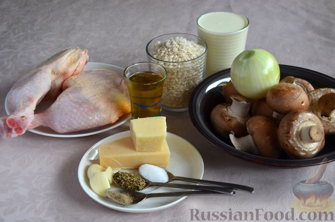
Шаг 1. Подготовьте все ингредиенты. Для кремовой консистенции готового блюда лучше всего использовать специальный рис для ризотто, но подойдёт и обычный круглозёрный рис. Лук и чеснок очистите.
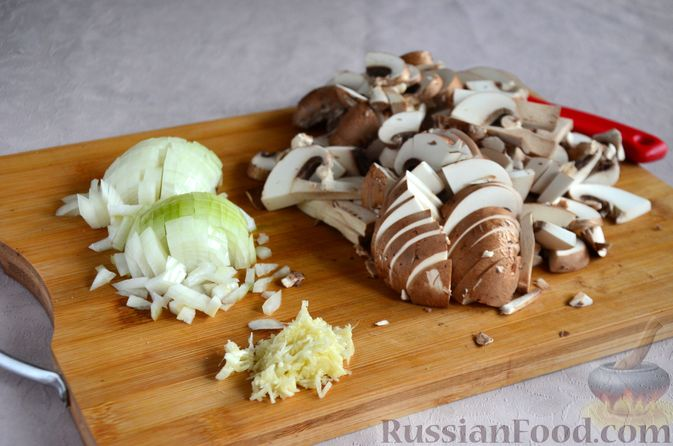
Шаг 2. Шампиньоны промойте, обсушите и нарежьте тонкими пластинками. Репчатый лук нарежьте небольшими кубиками. Чеснок натрите на мелкой тёрке.
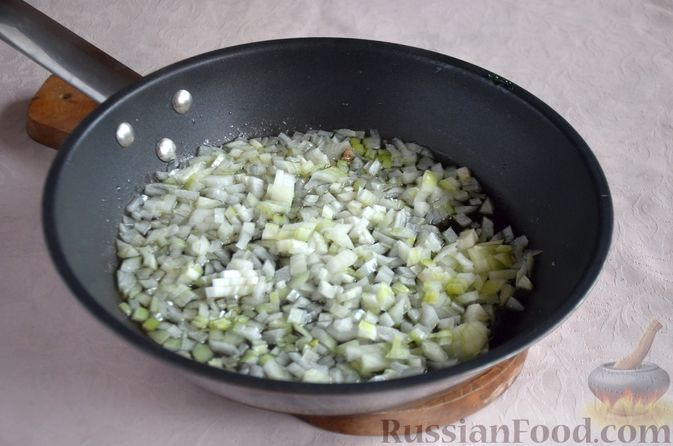
Шаг 3. Разогрейте в сковороде растительное масло и обжарьте лук 4-5 минут на среднем огне, до прозрачности.
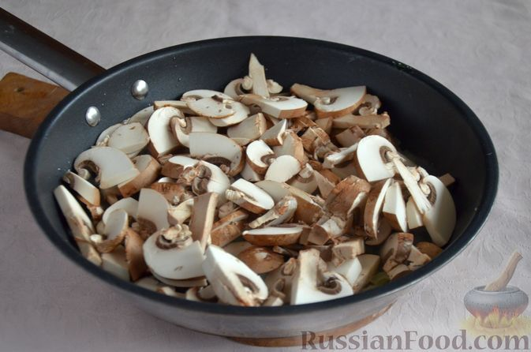
Шаг 4. Добавьте грибы, перемешайте и обжарьте всё ещё примерно 8 минут, пока не испарится выделившийся сок.
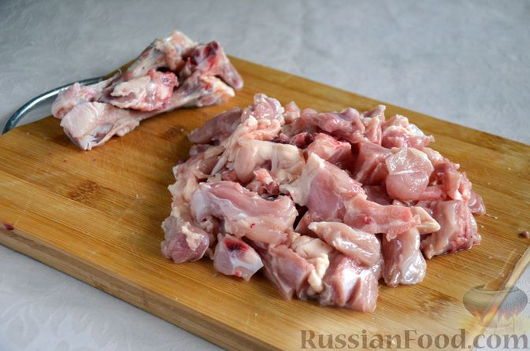
Шаг 5. С куриных окорочков снимите кожу. Филе отделите от костей и нарежьте небольшими кусочками.
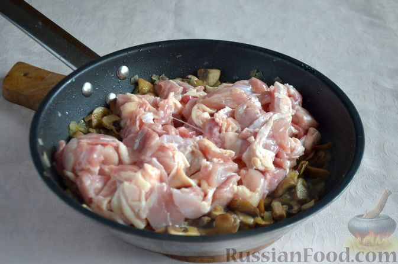
Шаг 6. Курицу выложите в сковороду, перемешайте. Увеличьте огонь и обжарьте, помешивая, 6-8 минут. Вскипятите 250 мл воды.
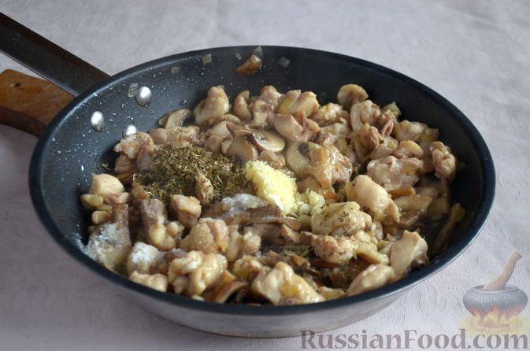
Шаг 7. Добавьте к куриному мясу чеснок, соль, перец и орегано, перемешайте.
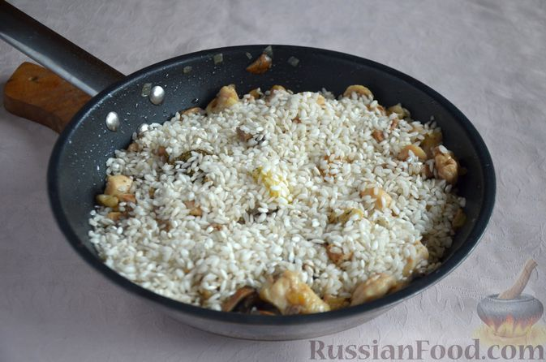
Шаг 8. Всыпьте сухой рис и перемешайте, чтобы он впитал в себя все соки.
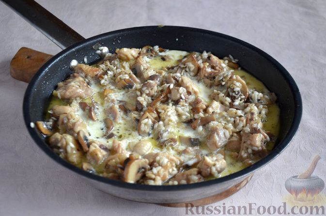
Шаг 9. Влейте сливки, доведите содержимое до кипения.
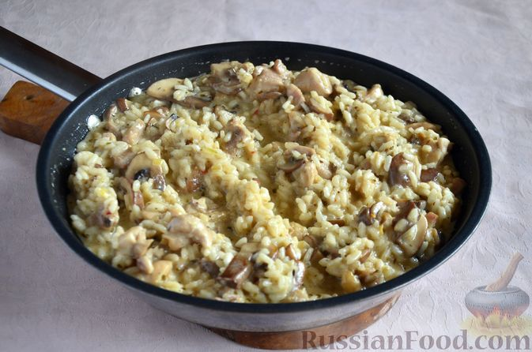
Шаг 10. Уменьшите огонь до среднего и готовьте, понемногу подливая горячую воду и помешивая, примерно 15 минут. Рис в готовом виде не должен развариться, он будет слегка чувствоваться упругим.
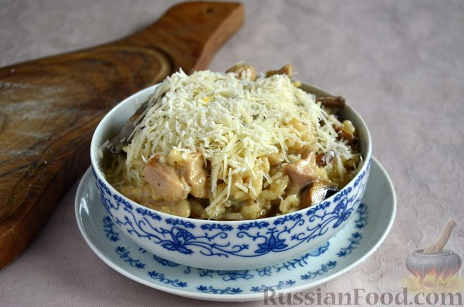
Шаг 11. Рис с курицей, грибами и сливками разложите по тарелкам и щедро присыпьте натёртым пармезаном или другим твёрдым сыром. Перемешайте.